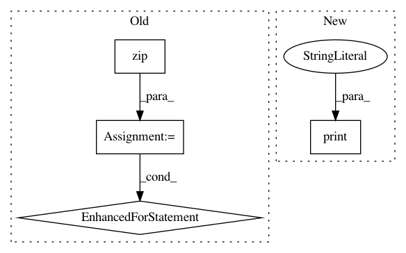

cb89711536f566f3ed7d121520fe32ad41ca83bc,finetune/utils.py,,assign_associations,#Any#Any#Any#,103
Before Change
continue
for association in segment_associations:
for bpe_idx, candiate_bpe_idxs, candidate_assoc_labels, assoc_probs in association:
for candidate_idx, candidate_label, candidate_prob in zip(candiate_bpe_idxs, candidate_assoc_labels, assoc_probs):
if candidate_label == none_value or candidate_idx not in idx_lookup:
continue
if idx_lookup[bpe_idx] not in candiates:
candiates[idx_lookup[bpe_idx]] = []
candiates[idx_lookup[bpe_idx]].append((idx_lookup[candidate_idx], candidate_label, candidate_prob))
// TODO some how sample these candidates eg maximum probabilities, to fit some schema
candiates = {k: max(v, key=lambda x: x[2]) for k, v in candiates.items()} // for now just pick maximum prob
return candiates
After Change
for bpe_idx, _, _, _ in association:
idx_lookups[i][bpe_idx] = active_label_idx
print("idx lookup", idx_lookups)
all_candidates = []
for idx_lookup, doc_label, doc_association in zip(idx_lookups, labels, associations):
candiates = {}
In pattern: SUPERPATTERN
Frequency: 5
Non-data size: 4
Instances
Project Name: IndicoDataSolutions/finetune
Commit Name: cb89711536f566f3ed7d121520fe32ad41ca83bc
Time: 2019-01-11
Author: benlt@hotmail.co.uk
File Name: finetune/utils.py
Class Name:
Method Name: assign_associations
Project Name: nilearn/nilearn
Commit Name: 97d75f47274b8d7e0e5b235346149da0bae9fc79
Time: 2013-08-26
Author: philippe.gervais@inria.fr
File Name: plot_adhd_covariance2.py
Class Name:
Method Name:
Project Name: OpenNMT/OpenNMT-tf
Commit Name: 06c50f050dc143126636b6c9b7d80ee3468377a6
Time: 2019-04-06
Author: guillaume.klein@systrangroup.com
File Name: examples/serving/ende_client.py
Class Name:
Method Name: main
Project Name: AlexEMG/DeepLabCut
Commit Name: 4ae9541144d2d3b03675587e16cce820c4fc1942
Time: 2021-01-22
Author: alexander@deeplabcut.org
File Name: deeplabcut/pose_estimation_tensorflow/predict_multianimal.py
Class Name:
Method Name: GetPoseandCostsF
Project Name: PIQuIL/QuCumber
Commit Name: f91dcf86dac8282e3b0144f65d44821fbbb248f2
Time: 2018-07-27
Author: gtorlai@uwaterloo.ca
File Name: qucumber/quantum_reconstruction.py
Class Name: QuantumReconstruction
Method Name: fit